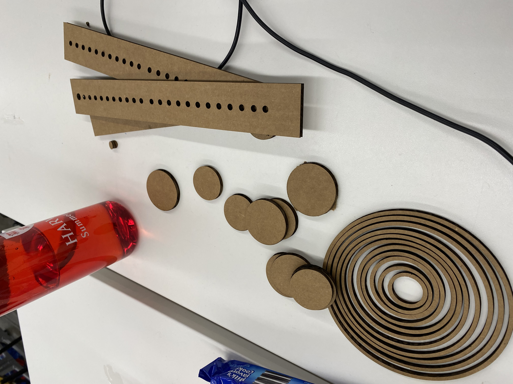
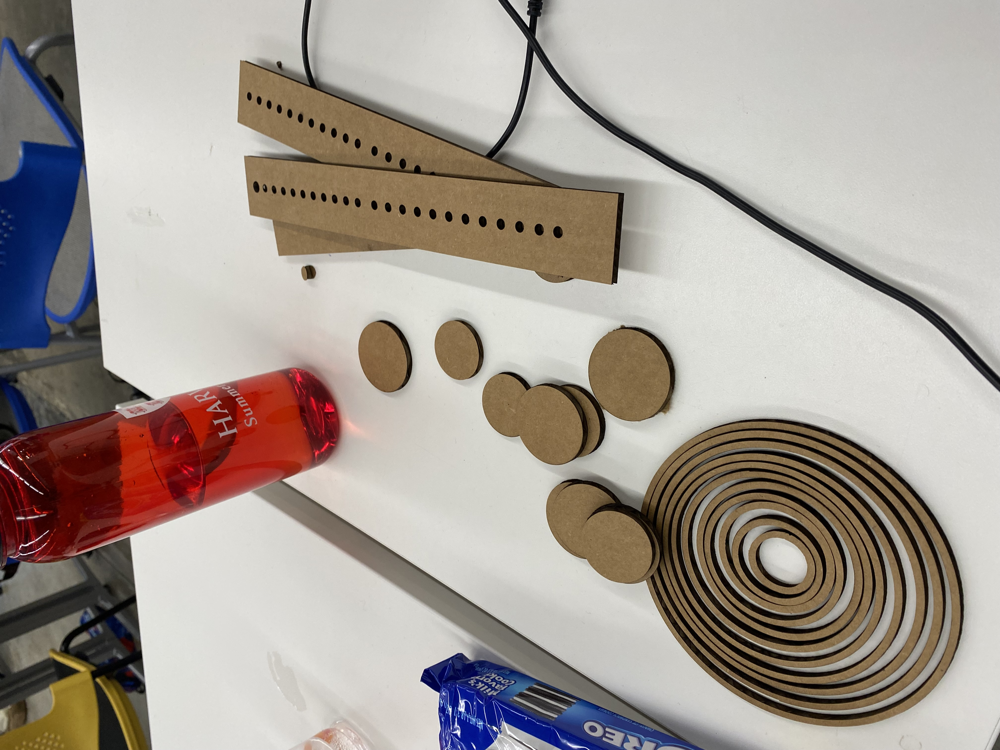
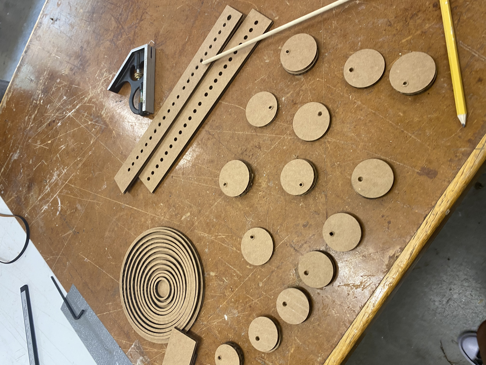
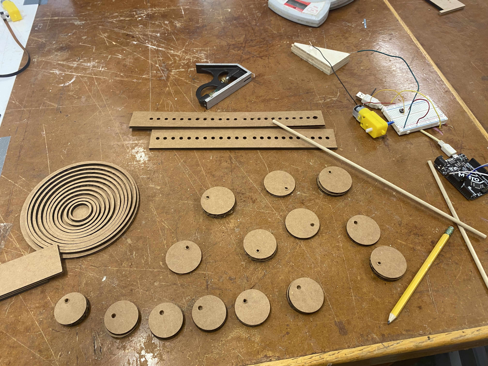
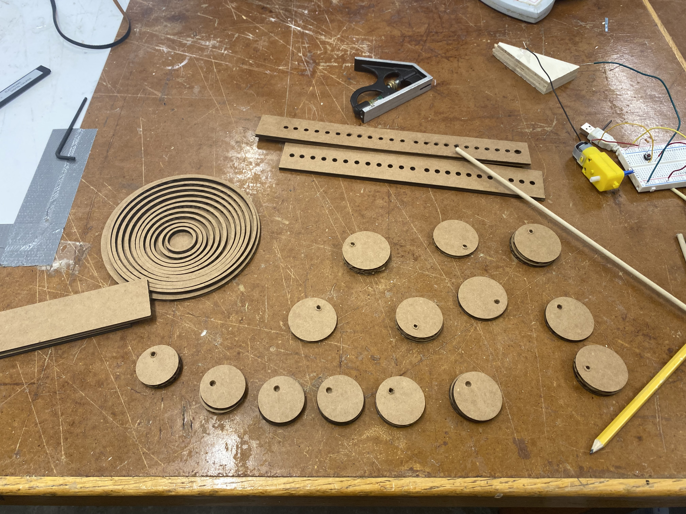

### Week 3
This assignment's objective was to create a kinetic sculpture with the motor that we were given in class. I was pretty excited for this assignment since we got to learn how to solder and I love machining. However, this project was very difficult for me because I didn't realize how technical it was to make.
I decided to make a kinetic sculpture that simulates a waterdrop falling into water. I got the instructions from this video.
https://youtu.be/XYdF-B0r_V0
These are the Pictures for all of the parts I had to CAD on Fusion 360.
<img src="waterdrop3.png" width="300" height="300">
So many things went wrong. I didn't realize how innaccurate the video's instructions were until I had already laser cut everything and was trying to put everything together. Also, I had to go all the way to a Michael's myself and buy my own skewers because there weren't 25 of them just lying around the room.
These are the pictures of the parts layed out.





It took a lot for me to be able to put it together, but I am proud of how good it looks in the end.
<img src="finalwaterdrop.jpg" width="600" height="600">